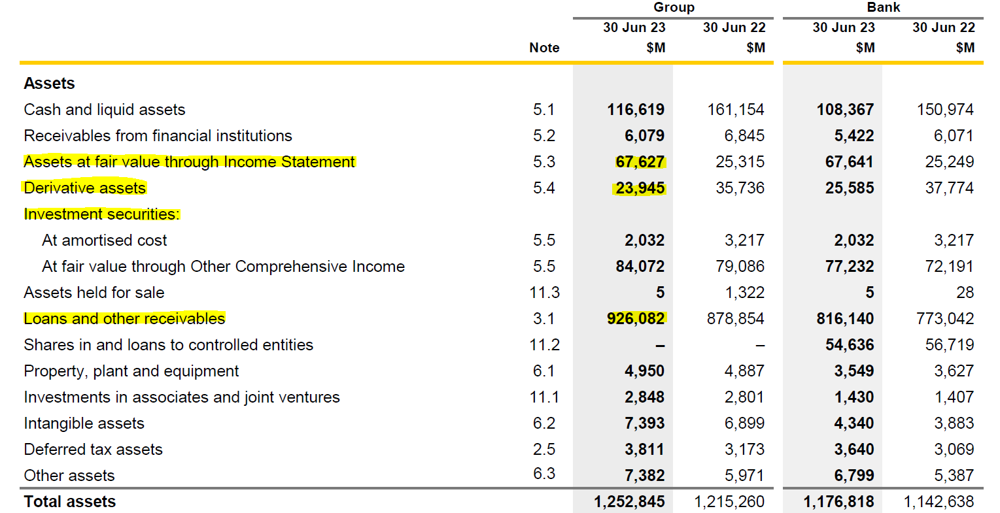
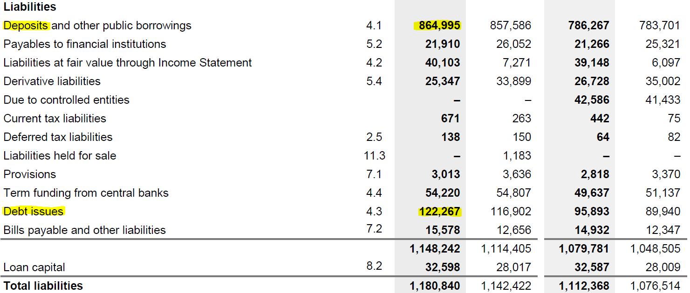
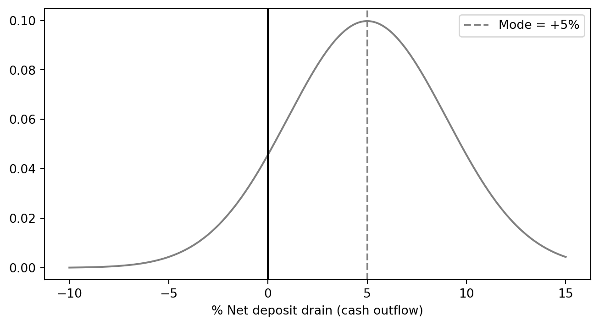
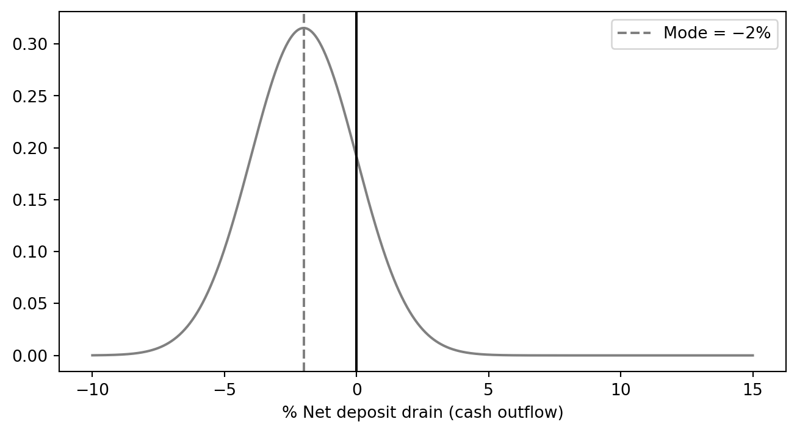

viewof L1 = Inputs.range([0, 300], {value: 120, step: 5, label: "Level 1 (\\$m)"})
viewof L2Araw = Inputs.range([0, 300], {value: 185, step: 5, label: "Level 2A, pre-haircut"})
viewof L2Braw = Inputs.range([0, 200], {value: 85, step: 5, label: "Level 2B, pre-haircut"})
viewof outflow = Inputs.range([5, 150], {value: 57.35, step: 0.05, label: "Stressed outflows"})
viewof inflow = Inputs.range([0, 80], {value: 5, step: 1, label: "Inflows"})AFIN8003 Week 8 - Liquidity Risk
Banking and Financial Intermediation
AFIN8003
2026S2
Liquidity Risk
Why this week matters
ImportantTwo bank deaths in 10 days: March 2023
| Silicon Valley Bank | Credit Suisse | |
|---|---|---|
| Run size | $42bn in one day (about 25% of deposits) | CHF 67bn of deposits in Q1 2023, most of it in late March |
| Time to failure | 48 hours | One week |
| Trigger | $1.8bn AFS loss disclosure | Loss of confidence |
| Outcome | FDIC seizure | UBS takeover for CHF 3bn |
| Solvent on paper? | Yes | Yes |
Both banks died of thirst, not insolvency. A bank’s funding model is as much a risk as its loan book.
Roadmap: how long can the promise last?
A bank promises to repay depositors on demand, while holding assets it cannot sell on demand. Everything this week measures the same thing at a different horizon: how long could the bank keep that promise?
| Horizon | The question | What we build |
|---|---|---|
| One day | How much cash walks out on an ordinary day? | Net deposit drains, core deposits |
| 30 days | Can it survive an acute run on its own? | LCR and the HQLA stack |
| One year | Is the funding structure stable at all? | NSFR |
| Beyond that | What happens when the buffer runs out? | Deposit insurance, lender of last resort |
TipThe uncomfortable part
Both banks on the previous slide were solvent. Neither ran out of capital. They ran out of time.
Two sides of the same risk
| Liability side | Asset side | |
|---|---|---|
| Trigger | Depositors / wholesale funders demand cash | Borrowers draw committed lines; investment portfolio loses value |
| Symptom | Net deposit drain | Forced asset sales |
| Cost | New funding at higher rates | Fire-sale loss on long-duration assets |
| Key concept | Distribution of net deposit drains; core deposits | Loan commitments; HQLA haircuts |
| March 2023 example | $42bn SVB run in one day | $1.8bn SVB AFS loss |
We focus on DIs, the institutions most exposed because they fund long-term assets with short-term, on-demand liabilities.
Sources of liquidity risk at DIs
Liability-side liquidity risk
- A DI’s balance sheet typically features a large amount of short-term liabilities funding relatively long-term assets.
- Short-term liabilities: demand deposits, other transaction accounts, etc.
- Long-term assets: mortgages, C&I loans, etc.
- Demand deposit accounts, money market deposit accounts (MMDAs), and other transaction accounts allow holders to demand immediate repayment of the face value in cash.
- For example, a DI with 20% of its liabilities in demand deposits, MMDAs, and other transaction accounts must be ready to liquidate assets to cover that amount on any banking day.
NoteScale of the maturity mismatch
For U.S. commercial banks, deposits typically make up 70–80% of total liabilities and capital, while cash assets are a small single-digit-to-low-teens share of total assets. The maturity mismatch is the business model, and the source of the risk.
The mismatch on one real balance sheet
CBA in FY2023 held only 9.3% of total assets in cash and liquid assets, and funded 73.25% of total liabilities with deposits and other public borrowings, most of it short-dated and on demand.


Liability-side liquidity risk (cont’d)
TipIt’s not that bad.
- Normally, only a small proportion of its deposits will be withdrawn on any given day.
- Further, deposit withdrawals may in part be offset by the inflow of new deposits1 (and the DI’s income).
Most demand deposits are relatively “stable”, acting as consumer core deposits on a daily basis.
- Core deposits are those deposits that provide a DI with a long-term funding source.
The DI manager must monitor and predict the net deposit drains on any given normal banking day.
- Beyond predictable daily seasonality in deposit flows, other seasonal variations exist.
- Many of these seasonal variations are somewhat predictable.
- Retail DIs often experience above-average deposit outflows around the end of the year and in the summer (due to Christmas and the vacation season).
- Rural DIs may experience a deposit inflow–outflow cycle aligned with the local agricultural cycle.
- During the planting and growing season, deposits tend to fall.
- During the harvest season, deposits tend to rise as crops are sold.
Net deposit drains and how DIs manage them
DI managers monitor the distribution of net deposit drains, the daily difference between withdrawals and inflows. Two stylised cases:
import matplotlib.pyplot as plt
import numpy as np
x = np.linspace(-10, 15, 1000)
y = np.exp(-0.5 * ((x - 5) / 4)**2) / (4 * np.sqrt(2 * np.pi))
plt.figure(figsize=(8, 4))
plt.plot(x, y, color='gray')
plt.axvline(x=0, color='black', linestyle='-')
plt.axvline(x=5, color='gray', linestyle='--', label='Mode = +5%')
plt.xlabel("% Net deposit drain (cash outflow)")
plt.legend()
plt.show()
Mode at +5% ⇒ withdrawals routinely exceed inflows ⇒ liability side contracting.
import matplotlib.pyplot as plt
import numpy as np
x = np.linspace(-10, 15, 1000)
y = np.exp(-0.5 * ((x + 2) / 2 )**2) / (4 * np.sqrt(2 * 0.1 * np.pi))
plt.figure(figsize=(8, 4))
plt.plot(x, y, color='gray')
plt.axvline(x=0, color='black', linestyle='-')
plt.axvline(x=-2, color='gray', linestyle='--', label='Mode = −2%')
plt.xlabel("% Net deposit drain (cash outflow)")
plt.legend()
plt.show()
Mode at −2% ⇒ inflows exceed withdrawals ⇒ balance sheet expanding.
When a positive drain materialises, the DI plugs it via either purchased liquidity (wholesale borrowing) or stored liquidity (run down cash / HQLA). Traditionally DIs leaned on stored liquidity; today most rely on purchased liquidity, examined next.
Managing liquidity risk
Purchased vs. stored liquidity: side by side
A $5 deposit drain (deposits 70 → 65). Two ways to plug it:
Purchased liquidity: borrow in wholesale markets (interbank, repo, CDs, notes/bonds).
| Before | After drain | After fix | |
|---|---|---|---|
| Assets | 100 | 100 | 100 |
| Deposits | 70 | 65 | 65 |
| Borrowed | 10 | 10 | 15 |
| Other liab. | 20 | 20 | 20 |
| Total | 100 | 95 | 100 |
✓ Balance sheet size preserved. ✗ Wholesale funding is costlier and flightier than deposits.
Stored liquidity: run down cash and HQLA buffers.
| Before | After drain & fix | |
|---|---|---|
| Cash | 9 | 4 |
| Other assets | 91 | 91 |
| Deposits | 70 | 65 |
| Borrowed | 10 | 10 |
| Other liab. | 20 | 20 |
| Total | 100 | 95 |
✓ No new (expensive) funding. ✗ Balance sheet contracts; foregone return on the cash buffer.
NoteReserve requirements have largely faded
The U.S. Fed cut all reserve requirements to zero on 26 March 2020 and has not reinstated them; the RBA does not impose a reserve ratio. Today, “stored liquidity” mostly means HQLA under the LCR, not regulatory cash reserves.
Asset-side liquidity risk: two channels
So far we have focused on liability-side drains. The asset side generates liquidity demand through two channels:
1. Loan-commitment drawdowns
Borrowers exercise pre-existing committed credit lines, so the bank must fund the loan today, even though it priced the commitment yesterday.
NoteCOVID-19 dash for cash
In March 2020, U.S. corporates drew on credit lines at unprecedented speed. Acharya et al. (2024) link this drawdown channel directly to bank-stock underperformance during the pandemic.
2. Investment-portfolio losses
Rising rates → MTM losses on bond holdings. If the bank must sell to fund withdrawals, paper losses become realised losses, eating into equity.
WarningSVB, March 2023
SVB sold its available-for-sale portfolio at an $1.8bn after-tax loss to raise cash for outflows. The disclosure itself triggered the run that killed the bank within 48 hours.
The mechanics of plugging an asset-side need (a $5 drawdown or $5 MTM hit) are the same as on the liability side: either purchase liquidity (more borrowing) or store liquidity (run down cash). The cost trade-offs are identical to the previous slide.
Asset-side liquidity risk: combined balance-sheet view
Loan-commitment exercise ($5 drawn)
| Before | Stored | Purchased | |
|---|---|---|---|
| Cash | 12 | 7 | 12 |
| Other assets | 138 | 143 | 143 |
| Deposits | 100 | 100 | 100 |
| Borrowed | 20 | 20 | 25 |
| Equity | 25 | 25 | 25 |
| Total | 150 | 150 | 155 |
Investment-portfolio MTM loss ($5)
| Before | Stored | Purchased | |
|---|---|---|---|
| Cash | 12 | 7 | 12 |
| Inv. port. | 50 | 50 | 50 |
| Other assets | 88 | 88 | 88 |
| Deposits | 100 | 100 | 105 |
| Borrowed | 20 | 20 | 20 |
| Equity | 20 | 20 | 20 |
| Total | 150 | 145 | 150 |
In both cases the stored route shrinks the balance sheet, and the purchased route preserves size at the cost of more wholesale funding.
Measuring liquidity risk
Measuring liquidity risk: from textbook to regulation
Liquidity-risk measurement has evolved through three layers. The first two (gap analysis, peer ratios) remain useful internal management tools; the Basel III LCR and NSFR are the binding regulatory standards.
| Layer | Measure | Question it answers | Status today |
|---|---|---|---|
| 1. Structural gap | Financing gap & financing requirement | How much wholesale funding do I need to plug the loan/deposit mismatch? | Internal ALM tool |
| 2. Peer benchmarking | Loan-to-deposit ratio, core deposits / assets, unused commitments / assets | How does my balance-sheet structure compare to peers and history? | Internal + supervisory monitoring |
| 3. Stress-based ratios | LCR (30-day), NSFR (1-year) | Can I survive 30 days of stress? Is my funding stable over 1 year? | Binding Basel III minima |
Financing gap in practice: the loan-to-deposit ratio
The financing gap is the textbook framing; the loan-to-deposit ratio (LDR) is the version banks and supervisors actually report.
\[ \text{Financing gap} = \text{Average loans} - \text{Average (core) deposits} \]
A positive gap must be filled by liquid assets sold or wholesale funding raised:
\[ \underbrace{\text{Financing gap}}_{\text{loans} - \text{deposits}} + \underbrace{\text{Liquid assets}}_{\text{stored}} = \underbrace{\text{Borrowed funds}}_{\text{purchased}} \]
TipWorked example: and the LDR view
A bank reports average loans of $25bn, deposits of $20bn, and liquid assets of $3bn.
- Financing gap = 25 − 20 = $5bn ⇒ requires $5bn of non-deposit funding.
- Of that, $3bn can come from liquid assets; the remaining $2bn must be borrowed.
- Equivalently, LDR = 25 / 20 = 125%, well above the ~70–80% typical for the Australian Big 4. The higher the LDR, the more the bank relies on wholesale funding (and, post-2008, the more attention APRA pays).
Other peer ratios worth watching
- Loans to assets: overall illiquidity of the asset book.
- Core deposits to total assets: share of sticky, lower-cost funding.
- Unused loan commitments to assets: contingent draw-down exposure (this is the channel that bit banks in March 2020).
- Wholesale funding to total liabilities: how much short-term, flighty money the bank relies on.
The 2023 SVB autopsy turned all of these into headline metrics: SVB’s uninsured-deposit share was ~94%, and its HTM bond book was ~50% of assets, both extreme outliers among U.S. peers.
LCR: short-term resilience
Basel III: two ratios, two horizons
| LCR | NSFR | |
|---|---|---|
| Question | Survive 30 days of acute stress? | Funding stable over 1 year? |
| Horizon | 30 days | 1 year |
| Numerator | Stock of HQLA | Available stable funding (ASF) |
| Denominator | Net cash outflows in stress | Required stable funding (RSF) |
| Minimum | ≥ 100% | ≥ 100% |
| In force | Phased 1 Jan 2015 → fully 1 Jan 2019 | 1 Jan 2018 |
| Reporting | Monthly | Quarterly |
WarningDid Basel III prevent SVB?
SVB sat just below the $250bn U.S. threshold, so the strictest LCR/NSFR rules did not bind. The 2018 rollback of post-crisis rules for mid-sized U.S. banks (S.2155) is a recurring theme in post-mortems of March 2023.
Liquidity Coverage Ratio (LCR): the 30-day question
“If a severe liquidity stress hits today, can the bank survive for 30 days using only its own liquid assets?”
\[ \text{LCR} = \frac{\text{Stock of HQLA}}{\text{Total net cash outflows over the next 30 calendar days}} \ge 100\% \]
- Numerator: high-quality liquid assets the bank can sell, repo, or pledge in stress at little loss of value.
- Denominator: modelled net cash outflows under a prescribed stress scenario combining an idiosyncratic shock (e.g. a credit-rating downgrade) and a market-wide shock (e.g. GFC-style funding freeze).
- Reporting: at least monthly to supervisors, with daily computation capacity required.
TipRead the ratio as a survival horizon
LCR = 100% means the bank can survive exactly 30 days of the stress scenario on its own liquidity. LCR = 150% buys a bigger margin of safety; LCR < 100% means the bank fails the test and must rebuild its buffer.
Building the numerator: the HQLA stack
Two universal requirements for any asset to count as HQLA:
- Liquid in stress: convertible to cash at little loss of value and acceptable at the central-bank facility as collateral.
- Unencumbered: free of legal, regulatory, contractual, or other restrictions on the bank to liquidate, sell, transfer, or assign it.
| Tier | Examples2 | Haircut | Cap |
|---|---|---|---|
| Level 1 | Cash, central-bank reserves, sovereign/central-bank/PSE/multilateral debt (e.g. BIS, IMF, ECB, MDBs) | 0% | none |
| Level 2A | Other sovereign/PSE/MDB claims; high-grade corporate debt; covered bonds | 15% | combined Level 2 ≤ 40% of HQLA |
| Level 2B | RMBS (eligible) | 25% | of which Level 2B ≤ 15% of HQLA |
| Level 2B | Eligible corporate debt and equities | 50% | (subject to same Level 2B sub-cap) |
WarningWhy the haircuts matter: SVB again
SVB held a large portfolio of long-dated U.S. Treasuries and agency MBS, Level 1 or Level 2A on paper. The book was technically HQLA-eligible. The problem was that the bank classified much of it as held-to-maturity (HTM) at amortised cost: the unrealised losses didn’t show on the balance sheet, but they crystallised the moment SVB had to sell. The haircut framework prices in expected loss in stress; HTM accounting hid the loss until it was too late.
Building the denominator: net cash outflows
\[ \text{Net cash outflows} \,=\, \underbrace{\text{Out}}_{\text{outflows}} - \min\!\bigl(\underbrace{\text{In}}_{\text{inflows}},\ 0.75 \times \text{Out}\bigr) \]
- Outflows (\(\text{Out}\)): every deposit, wholesale liability and contingent commitment, multiplied by a stressed run-off factor.
- Inflows (\(\text{In}\)): contractual receipts within 30 days from performing assets.
- The 75% cap on inflows ensures the bank cannot rely entirely on incoming cash. It must hold a meaningful HQLA buffer regardless.
Run-off factors: pricing the flightiness of funding
The intuition: the more flighty the funding, the higher the assumed run-off.
| Liability type | Stressed run-off | Why |
|---|---|---|
| Stable retail deposits (insured, transactional) | 3–5% | Sticky; protected by deposit insurance |
| Less-stable retail deposits (e.g. brokered) | 10%+ | Less behavioural attachment |
| Operational corporate deposits | 25% | Tied to clearing/payments services |
| Non-operational unsecured wholesale (financial) | 100% | Will leave overnight in a crisis |
| Non-operational unsecured wholesale (corporate) | 40% | Slower, but still flighty |
| Undrawn committed credit lines (corporate) | 10% | Drawdowns spike in stress (cf. COVID-19) |
NoteThe hidden assumption: 30 days of that deposit base
LCR run-offs were calibrated to GFC-era deposit behaviour. The March 2023 SVB run exceeded the assumed retail/SME run-off in a single day, not 30. Post-2023 reviews by the Basel Committee, FRB, BoE, and APRA are explicitly considering whether run-off factors need to rise for highly digital, concentrated, or uninsured deposit bases.
Liquidity Coverage Ratio (LCR): example
Consider the following balance sheet (in millions of dollars) of a bank. Calculate the bank’s LCR.3
- Assume that the cash inflows over the next 30 days from the bank’s assets are $5 million.
| Assets | $ | Liquidity Level | Liabilities and Equity | $ | Run-Off Factor |
|---|---|---|---|---|---|
| Cash | 5 | Level 1 | Stable retail deposits | 95 | 3% |
| Deposits at the Fed | 15 | Level 1 | Less Stable retail deposits | 40 | 10 |
| Treasury securities | 100 | Level 1 | Unsecured wholesale funding from: | ||
| GNMA securities | 75 | Level 2A | - Stable small business deposits | 100 | 5 |
| Loans to A-rated corporations | 110 | Level 2A | - Less Stable small business deposits | 80 | 10 |
| Loans to B-rated corporations | 85 | Level 2B | - Nonfinancial corporates | 50 | 75 |
| Premises | 20 | Equity | 45 | ||
| Total | 410 | Total | 410 |
Liquidity Coverage Ratio (LCR): example (cont’d)
The LCR is calculated as follows:
First, calculate the amount of HQLA.
- Level 1 assets is \(5+15+100=120\) million
Before adjustment for caps,
- Level 2A assets is \((75+110)\times (1-15\%) = 157.25\) million4
- Level 2B assets is \(85\times (1-50\%)=42.5\) million5
However, Level 2 assets is capped at 40% of HQLA!
- Given that Level 1 assets is 120 million, which should account for at least \(1-40\%=60\%\) of HQLA.
- HQLA should be \(120/(1-40\%) = 200\) million, which means a maximum of \(200-120=80\) million Level 2 assets.
- The Level 2 assets after haircut is larger than the cap - they will not further increase HQLA.
Therefore, the HQLA is 200 million.
Liquidity Coverage Ratio (LCR): example (cont’d)
Next, calculate the total net cash outflows over next 30 days.
Cash outflows are:
- Stable retail deposits: \(95\times 0.03 = 2.85\)
- Less stable retail deposits: \(40\times 0.1 = 4\)
- Stable small business deposits: \(100\times 0.05 = 5\)
- Less stable small business deposits: \(80\times 0.1 =8\)
- Nonfinancial corporates: \(50\times 0.75 = 37.5\)
Therefore,
- Total cash outflows over next 30 days is 57.35 million.
- Total cash inflows over next 30 days is 5 million (assumed).
- Total net cash outflows over next 30 days is 57.35 million - min(5, 75% * 57.35) = 52.35 million.
Lastly, calculate LCR:
\[ \text{LCR} = \frac{\text{Stock of HQLAs}}{\text{Total net cash outflows over next 30 calendar days}} = \frac{200}{52.35} = 382.04\% \ge 100\% \]
Now move the numbers yourself
Sliders start at the worked example. Level 2A takes a 15% haircut, Level 2B 50%.
NoteThree things to try
- Push Level 2A up on its own. Past a point the LCR stops moving: the 40% cap is binding, and the extra securities count for nothing.
- Now raise Level 1 instead. The cap is a multiple of Level 1, so buying government paper lifts the ceiling as well as the numerator.
- Raise inflows above 75% of outflows. The ratio stops improving, because the inflow cap forces the bank to hold its own buffer.
NSFR: structural funding stability
Net Stable Funding Ratio (NSFR): the 1-year question
“Is the bank’s funding model structurally stable over a one-year horizon, or is it built on the kindness of overnight wholesale markets?”
\[ \text{NSFR} = \frac{\text{Available Stable Funding (ASF)}}{\text{Required Stable Funding (RSF)}} \ge 100\% \]
The LCR addresses acute stress (30 days); the NSFR addresses structural funding mismatch (1 year). Both must be ≥ 100%, and they are complements, not substitutes.
TipWhere it bites
The NSFR penalises banks that fund long-duration assets (long-term loans, illiquid securities) with short-term wholesale funding, exactly the funding model that blew up Northern Rock in 2007 and stressed European banks throughout the GFC.
NSFR: ASF and RSF factors
Available Stable Funding (ASF) weights liabilities + equity by how reliably they will stick around for a year. Required Stable Funding (RSF) weights assets by how illiquid / long-dated they are (i.e. how much stable funding they “need”).
ASF factors (selected)
| Funding source | ASF factor |
|---|---|
| Capital, liabilities with maturity > 1 year | 100% |
| “Stable” retail / SME deposits | 95% |
| “Less stable” retail / SME deposits | 90% |
| Non-financial corporate, sovereign, PSE funding < 1 year | 50% |
| Funding from financial institutions < 6 months | 0% |
Higher factor ⇒ “this funding is stable, count more of it.”
RSF factors (selected)
| Asset / OBS exposure | RSF factor |
|---|---|
| Cash, central-bank reserves | 0% |
| Level 1 HQLA | 5% |
| Level 2A HQLA | 15% |
| Performing residential mortgages (≤ 35% risk weight) | 65% |
| Other performing loans (residual maturity ≥ 1 year) | 85% |
| Non-performing loans, encumbered assets > 1 year | 100% |
| Undrawn committed facilities | 5% of notional |
Higher factor ⇒ “this asset locks up funding; you need more stable funding to hold it.”
NoteReading the formula
A bank holding lots of long-term mortgages (high RSF) funded mainly with overnight repos (low ASF) will fail the NSFR, exactly the funding-mismatch the rule is designed to discourage.
LCR and NSFR in practice: the Big 4
Liquidity of the Australian majors, FY2025
| CBA | NAB | ANZ | Westpac | |
|---|---|---|---|---|
| Balance date | 30 Jun 25 | 30 Sep 25 | 30 Sep 25 | 30 Sep 25 |
| LCR (average) | 130% | 135% | 132.1% | 137% |
| NSFR | 115% | 116% | 114.6% | 113% |
| LCR two years earlier (FY2023) | 131% | 140% | 132.9% | 134% |
| NSFR two years earlier (FY2023) | 124% | 116% | 116.4% | 115% |
TipWhat to notice
- All four clear the 100% minimum on both ratios, and none by a wide margin.
- The range is narrow (LCR 130 to 137, NSFR 113 to 116). That is APRA’s supervisory benchmarking, not coincidence.
- NSFRs have compressed, most sharply at CBA: 124% down to 115% in two years.
NoteDiscussion
CBA’s LCR barely moved over the two years, but its NSFR fell nine percentage points. What kind of change to a balance sheet moves the one-year ratio without moving the 30-day one?
Discussion points.
The two ratios answer different questions, so they move for different reasons. The LCR asks whether 30 days of stressed outflow is covered by liquid assets. The NSFR asks whether long-dated assets are matched by funding that will still be there in a year. A bank can hold a perfectly adequate pile of HQLA (LCR fine) while the term of its funding shortens underneath it (NSFR falls).
Leading candidate for the CBA move: the RBA’s Term Funding Facility. Banks drew $188 billion, about 88% of the $213 billion available, at three-year terms during the pandemic. Three-year central bank funding is close to perfect available stable funding. The final tranche matured on 30 June 2024, and replacing it with shorter deposits and wholesale paper lowers ASF without touching the HQLA stock. CBA drew the largest share, so it had the most to replace.
Second candidate, and worth raising if nobody does: the denominator. Lending growth raises required stable funding. If housing and business credit grow faster than stable deposits, the NSFR falls even with no change in funding mix at all.
Ask which of the two you could distinguish from this table alone. The answer is neither, which is the point: these are summary ratios and diagnosis needs the underlying ASF and RSF components.
Bank runs and safety nets
Liquidity risk, unexpected deposit drains, and bank runs
Major liquidity problems arise when deposit drains are abnormally large and unexpected, for reasons including:
- Concerns about a DI’s solvency relative to its peers.
- Failure of a related DI, the contagion effect.
- Sudden changes in investor preferences for holding non-bank financial assets (e.g. T-bills, money-market funds) over deposits, particularly when those alternatives offer materially higher yields.
In these cases, unexpected deposit drains can trigger a bank run that eventually forces the bank into insolvency. In the worst case, a bank panic spreads: a systemic, contagious run across the banking industry.
TipThe 2023 run was different
Classic bank runs (think 1930s) propagated by word of mouth and physical queues. The March 2023 SVB run propagated by Slack, Twitter/X, and WhatsApp, and depositors moved money out of mobile apps in seconds rather than hours. Regulators are now actively rethinking how fast LCR-style buffers can really last when the run velocity is digital.
Does “30 days” mean 30 days?
ImportantThe arithmetic nobody likes
Days of survival \(=\dfrac{\text{buffer}}{\text{daily outflow}}\)
The LCR fixes the numerator. The run fixes the denominator. Only one of those is under the bank’s control.
WarningSet the run to 25% and look again
SVB lost about 25% of deposits in one day. At that speed a 20% buffer is gone in under a day, and a bank reporting a healthy LCR the previous week still fails. The LCR is not wrong, it is answering a question about a 30-day stress that the deposit base no longer obeys.
This is why post-2023 reviews by the Basel Committee, the Fed, the Bank of England and APRA are all revisiting run-off factors for digital, concentrated and uninsured funding.
Bank runs, the discount window, and deposit insurance
The two major liquidity risk insulation devices are deposit insurance and the discount window (or its central-bank equivalent).
- Deposit insurance: a public guarantee on insured deposits up to a per-depositor cap (US: FDIC; Australia: FCS).
- Discount window / lender-of-last-resort facilities: short-term central-bank lending against eligible collateral, at the “discount rate.”
- In the week ending 15 March 2023, U.S. banks drew $152.85 billion from the Federal Reserve’s discount window, a new record, eclipsing the $111 billion peak of the 2008 GFC.
- In Switzerland the same week, the SNB pledged CHF 50 billion of liquidity to Credit Suisse; when that was insufficient, the eventual support package totalled CHF 250 billion.
- In response to SVB the Fed also launched the Bank Term Funding Program (BTFP), lending against high-quality securities valued at par with no haircut, an unusually generous design. It stopped extending new loans on 11 March 2024.
WarningMoral hazard
Insulation is not free. Insured deposits and easy LOLR access can encourage DIs to take more liquidity risk: hold riskier loans, fewer HQLA, more flighty wholesale funding. This is precisely why the Basel III LCR/NSFR rules exist: to put a regulatory floor under the liquidity buffer that protection might otherwise erode.
Liquidity regulation and depositor protection
Liquidity regulation in Australia
- In Australia, liquidity requirements are set by APRA.
- Prudential Standard APS 210: Liquidity aims to ensure that an ADI has sufficient liquidity to meet obligations as they fall due.
APRA classifies each ADI as either:
- an LCR ADI (subject to the Basel III LCR, effective from 1 January 2015), or
- an MLH ADI (subject to the Minimum Liquidity Holdings regime, effective from 1 January 2014).
TipWhat March 2023 changed here
APRA finalised targeted changes to APS 210 in response to the 2023 turmoil, in force since 1 July 2025:
- MLH ADIs must revalue their liquid assets for mark-to-market movements rather than carrying them at amortised cost. This is precisely the gap that hid SVB’s losses.
- All ADIs must be operationally ready to supply the information needed to request Exceptional Liquidity Assistance from the RBA.
The headline 9% MLH minimum is unchanged.
LCR ADI vs. MLH ADI
APRA splits ADIs into two regulatory tracks under APS 210:
| Feature | LCR ADI | MLH ADI |
|---|---|---|
| Who | Larger / internationally active banks (the Big 4 and other significant ADIs) | Smaller ADIs (e.g. mutual banks, building societies, smaller credit unions) |
| Core requirement | Basel III LCR ≥ 100% and NSFR ≥ 100% | Liquid assets ≥ 9% of liabilities |
| Liquid asset definition | HQLA (Level 1 + capped Level 2, with haircuts) | RBA-repo-eligible, unsubordinated debt securities |
| Stress testing | Regular scenario analysis (at minimum: LCR scenario + “going concern”) | Operational capacity to liquidate liquid assets within 2 business days; trigger ratio set above 9% |
| Effective from | 1 January 2015 (LCR), 1 January 2018 (NSFR) | 1 January 2014 |
In short: LCR ADIs run the full Basel III stack; MLH ADIs run a simpler ratio-based regime scaled to their size and complexity.
Depositor protection
- Deposit insurance is a public mechanism designed to insulate depositors, and indirectly DIs, from liquidity crises.
- In the U.S., the Federal Deposit Insurance Corporation (FDIC) was created in 1933 in the wake of the Great Depression banking panics. The standard deposit insurance limit is $250,000 per depositor, per insured bank, per ownership category (raised from $100,000 in 2008).
- Most major economies now operate an explicit deposit insurance scheme.
- In October 2008, in response to the GFC, Australia introduced the Financial Claims Scheme (FCS) alongside a temporary wholesale funding guarantee.
- The FCS initially guaranteed deposit balances up to $1 million per depositor per institution.
- The permanent cap of $250,000 per account-holder per ADI has been in place since 1 February 2012.
- APRA administers the FCS, but it is only activated if the Treasurer declares an ADI to have failed. It is not a continuously running insurance product.
Other Australian depositor protection mechanisms
- Guarantee scheme for large deposits and wholesale funding
- Guaranteed deposit balances greater than $1 million and funding instruments with a maturity of 5 years or less
- Available to branches of foreign-owned banks
- Closed in March 2010 after the recovery of global funding conditions
- Financial Claims Scheme: Policyholders Compensation Facility
- Similar as FCS for DIs
- Available to general insurers authorised by APRA
Liquidity risk beyond banks
NoteOptional reading
The mechanisms parallel those for DIs: forced asset sales, loss of confidence, run dynamics. Skim for context, not examinable in detail.
Life insurers hold cash and liquid assets to meet policy surrenders. Premium income and investment returns normally cover them, with government bonds as the buffer. A loss of confidence can trigger mass surrenders, forcing liquidations at poor prices and pushing the insurer towards insolvency exactly as a run does to a bank.
Property and casualty insurers face the same problem from the other direction: a natural disaster produces claims that exceed premium income and investment returns at once.
NoteCase study: Equitable Life
The Equitable Life Assurance Society, founded in 1762 and the world’s oldest mutual insurer, lost a 2000 House of Lords ruling (the Hyman case) on guaranteed annuity rates. The adverse ruling triggered a wave of surrenders and the society closed to new business in December 2000. Its remaining policies transferred to Utmost Life and Pensions on 1 January 2020, ending a 258-year history.
Finally…
Key takeaways
ImportantWhat to remember
- Liquidity ≠ solvency: but a liquidity shock can kill a solvent bank in 48 hours (SVB).
- Both sides of the balance sheet matter: deposit runs (liability side) often coincide with fire-sale losses on long-duration securities (asset side).
- Buffers come in two flavours: purchased (wholesale market) and stored (HQLA, central-bank reserves). Both have costs.
- Basel III gave us LCR and NSFR: short-term (30-day) and structural (1-year) liquidity ratios, both with a 100% minimum.
- Australia layers it on: APRA classifies ADIs as LCR (the Big 4 et al.) or MLH (smaller ADIs at 9%); 1 July 2025 brought mark-to-market and ELA-readiness tweaks.
- Safety nets create moral hazard: deposit insurance and the discount window protect the system but encourage risk-taking, which is why prudential rules are needed.
Suggested readings
- APRA Explains: Liquidity in banking.
- RBA: The Implementation of Monetary Policy: Domestic Market Operations.
- BIS: LCR - Liquidity Coverage Ratio.
- Prudential Standard APS 210 Liquidity.
- Acharya, V. V., Engle, R., Jager, M., & Steffen, S. (2024). Why Did Bank Stocks Crash during COVID-19? The Review of Financial Studies, 37, 2627–2684.
References
Acharya, Viral V, Robert Engle, Maximilian Jager, and Sascha Steffen. 2024. “Why Did Bank Stocks Crash During COVID-19?” The Review of Financial Studies 37 (9): 2627–84. https://doi.org/10.1093/rfs/hhae028.
Saunders, Anthony, Marcia Millon Cornett, and Otgo Erhemjamts. 2023. Financial Institutions Management ISE. 11th ed. McGraw Hill.
Footnotes
Large inflow of deposits may also cause issues if the DI cannot find sufficiently attractive investments.↩︎
Each tier carries additional eligibility tests (rating, market depth, repo eligibility, etc.). See BIS LCR40: HQLA.↩︎
This example follows the textbook (Saunders et al. 2023). Strictly speaking, HQLA comprises marketable securities, ordinary loans would not qualify. Treat “loans to A-rated/B-rated corporations” here as tradable corporate debt exposures used for illustration.↩︎
There is a 15% haircut applied on the value of Level 2A assets.↩︎
There is a 50% haircut applied on the value of Level 2B assets.↩︎